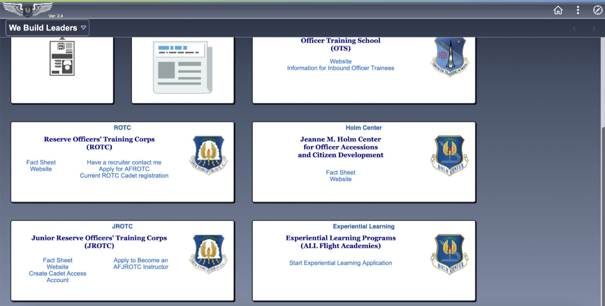
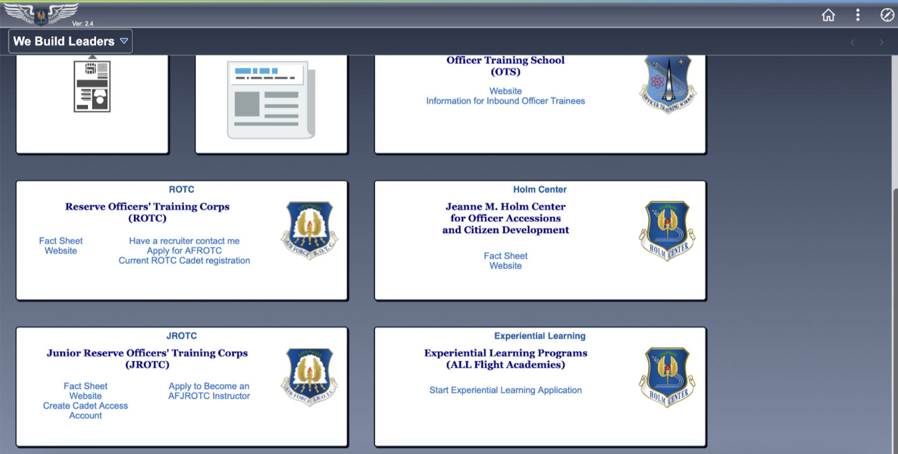

Why Is There Need For Redesign!?
Take a look at the images below or you can also click on the link and see the full original Trader Joe's wesbite. What comes to mind upon first seeing the layout?
Visit Trader Joe's 

Below you will find some information describing what I found the design issues to be... click on the box to see more!